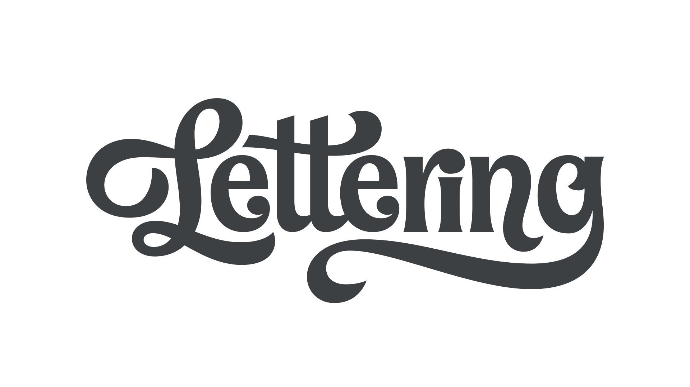

Lettering
By Google Fonts Knowledge contributors · Google Fonts Knowledge.
Original article · Source on GitHub · CC BY-SA 4.0. Text, illustrations and existing credits reproduced from the licensed Knowledge repository. Open Shelf adapted the layout and links; these adaptations are also CC BY-SA 4.0. No endorsement implied.
Lettering is the art of drawing letters rather than writing them, and is therefore distinct from handwriting, calligraphy, and typography.

Lettering by Jessica Hische
Although lettering is unlike typography in that no characters are fixed, most lettering artists employ a uniform construction to their letterforms. With the use of OpenType features such as alternate characters, typography can also sometimes resemble lettering. However, “true” lettering is created for a specific use case; i.e., a drawing of a particular word or phrase.